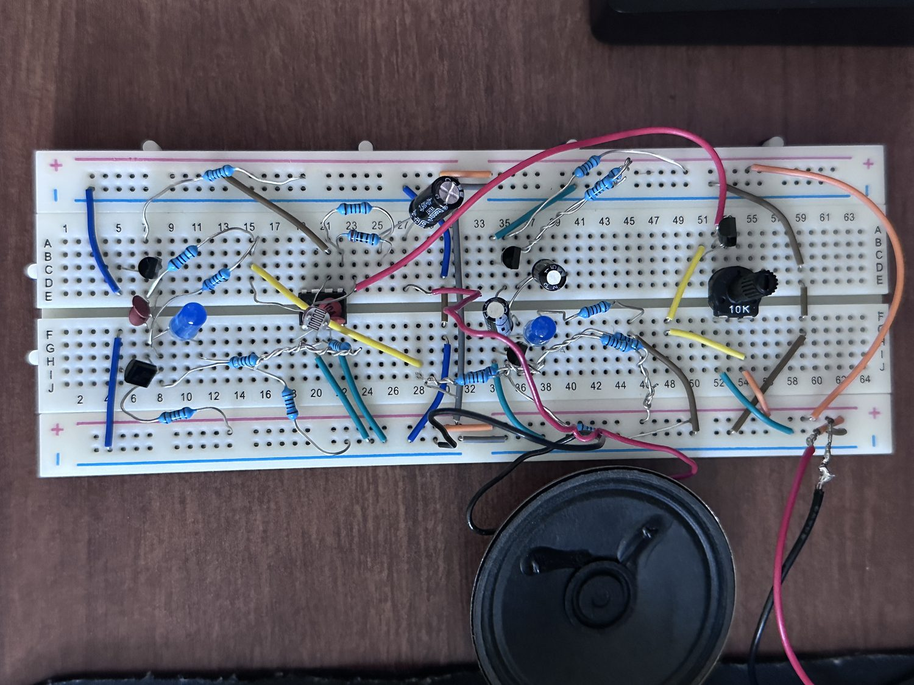

Analog Design · Audio · Discrete Transistors
Analog Synthesizer Built From Transistors

What it is
An analog synthesizer made from transistors. It plays a tone whose pitch you can change two ways, with light or with a knob, and a second slow oscillator sweeps the pitch up and down on its own so it sounds like a siren. It runs off a single 9 V supply into a small speaker, with no microcontroller.
The voice
The tone comes from an astable multivibrator: two transistors wired so each keeps switching the other off, producing a square wave. The frequency is about f ≈ 1/(1.38·R·C), which with 10 kΩ and 100 nF predicts around 725 Hz. It measured a little higher, which is normal for this circuit.
Two ways to bend the pitch
A photoresistor sits in the timing network. More light drops its resistance and the tone rises; cover it and the pitch falls.
The knob works differently. It changes the oscillator's supply voltage. The pot sets a voltage, and a transistor follower copies it while still supplying real current. Without the follower, the pot's voltage would sag under load and the pitch would drift. With it, the oscillator follows the knob cleanly.


Covering the sensor cut the frequency almost exactly in half, which confirms the light path is what sets the timing.
Turning the knob took the tone from not oscillating at all up through 277 Hz, 638 Hz and 1243 Hz as the supply rose toward 7.4 V, which is what the theory predicts.
Modulator and output
A second astable runs slowly on purpose, using 10 µF capacitors, at a measured 1.67 Hz. It pushes the voice's timing up and down, which makes the pitch warble. Each oscillator drives an LED so you can see both running, which also let me count the modulator rate by eye before I put a scope on it.
The output goes through an LM386. The tone is AC-coupled in so only audio gets through, and a series resistor keeps the level down, since the raw square wave is big enough to clip the amplifier.
The battery problem

Running the same circuit on two different 9 V batteries gave results that looked backwards. The battery reading 8.2 V gave a slow 1.9 Hz warble, and the one reading 7.3 V gave a much faster 7.6 Hz. A higher voltage should make the modulator faster, not slower.
The explanation is internal resistance. A real battery's voltage sags under load, and a weaker battery sags more. The two batteries didn't just have different voltages, they had different internal resistance, and I measured both while the circuit was running, so each reading already included its own sag. "More volts, faster" only works when everything else is equal, and here it wasn't.
The right way to test supply voltage by itself is a bench supply that holds its voltage no matter how much current the circuit draws.